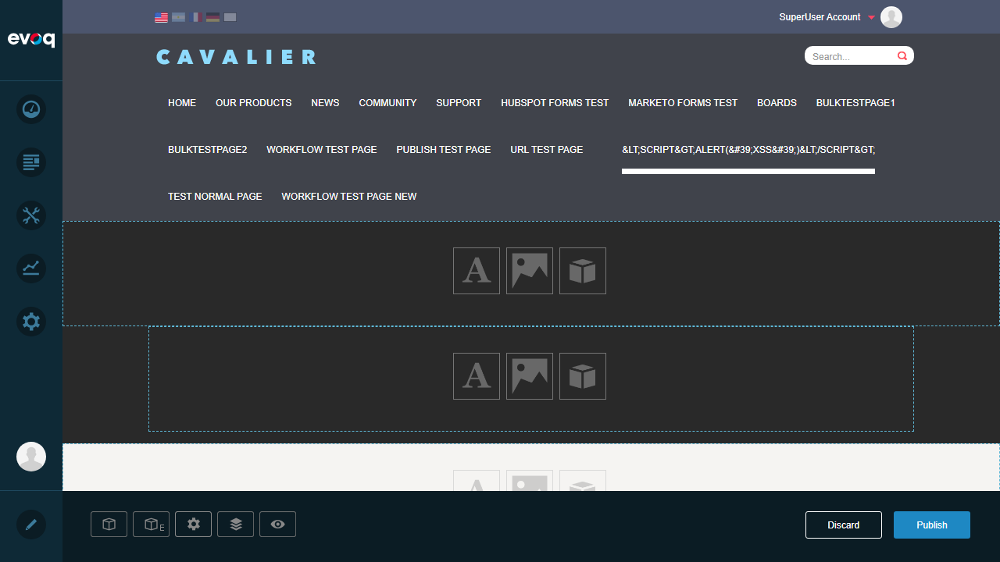
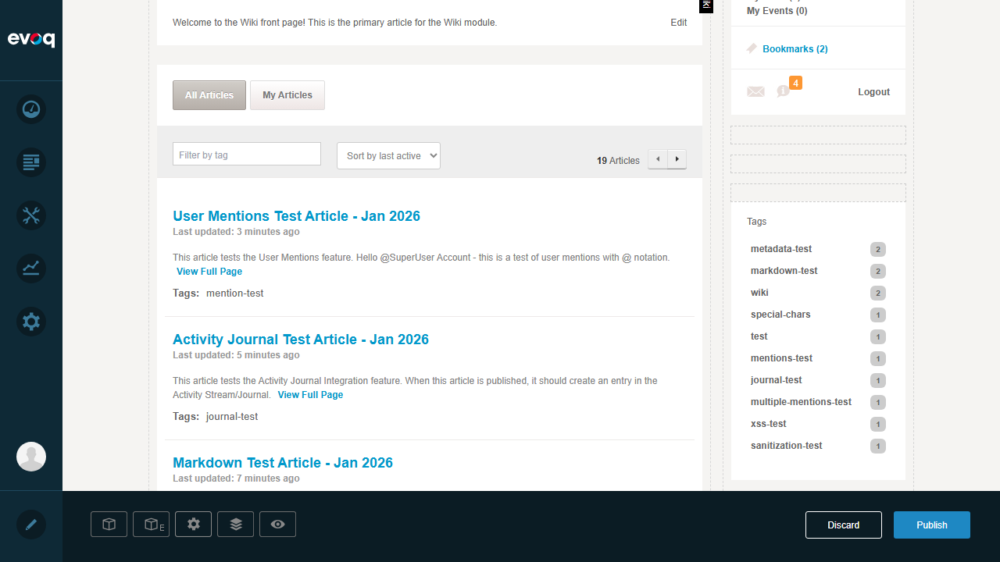
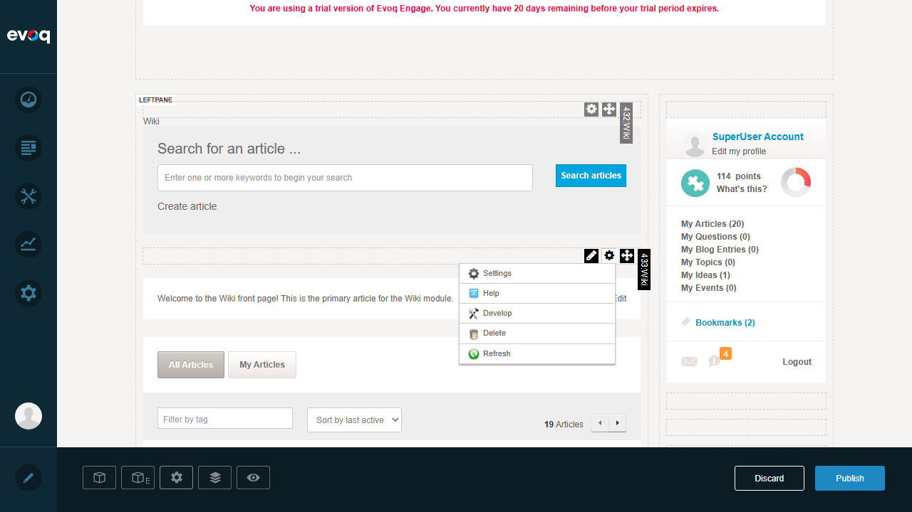

Test: Import/Export Content Feature Accessibility FAIL
Objective: Verify the Import/Export Content feature is accessible from Module Actions
Steps Taken:
- Logged in as SuperUser (host/Pass123456)
- Navigated to Community > Wiki page
- Entered Edit mode by clicking the Edit button in control panel
- Located the Wiki module (Module ID: 433)
- Clicked on Module Actions to view available options
- Expanded Admin submenu to check for Import/Export options
Issue Found
The Import/Export Content feature does NOT exist in the Wiki module's Module Actions menu. The Admin submenu only contains:
- Settings
- Help
- Develop
- Delete
- Refresh
There is no "Import Content" or "Export Content" option available.

Step 1: Login confirmed as SuperUser Account

Step 2: Wiki module page with 19 articles

Step 3: Entered Edit mode to access Module Actions

Step 4: Wiki module content visible in edit mode

Step 5: Admin menu showing only Settings, Help, Develop, Delete, Refresh - NO Import/Export option